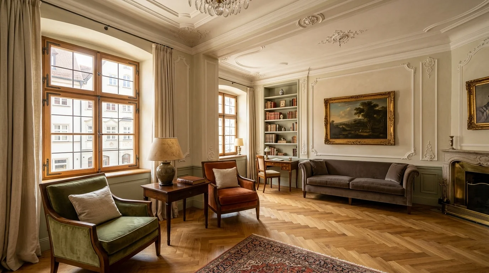

105 JAHRE MEISTERHANDWERK • 4. GENERATION SEIT 1921
Meisterhafte Wandkunst & exklusive Raumkultur.
Seit über einem Jahrhundert veredelt die Malerei Weidlich anspruchsvolle Wohn- und Geschäftsräume in Augsburg. Erleben Sie Farbwelten, mineralische Edelputze und Lichtstimmungen live in unserem Altstadt-Showroom – oder überlassen Sie uns die Renovierung entspannt während Ihres Urlaubs.
„Vom ersten Kontakt bis zur Entfernung des kleinsten Farbspritzer waren wir äußerst zufrieden.“
— Horst Holland, Augsburg

🏛️
Showroom Bäckergasse 12aFarben, Texturen & Lichtstimmungen live fühlen
105Jahre Handwerkstradition
Seit 1921 in vierter Generation meistergeführt in Augsburg.
5.0Google Bewertung
Höchstbewertet bei 42 verifizierten Kundenstimmen.
42Begeisterte Kunden
Vom Altstadt-Klassiker bis zur modernen Bauhaus-Villa.
100%Staubschutz-Garantie
Keine Schmutzspuren. Saubere Übergabe bis ins Detail.
INTERAKTIVES SHOWROOM-ERLEBNIS
Das Augsburger Farb- & Textur-Atelier
Wie wirken mineralische Farben unter echtem Sonnen- und Kunstlicht? Schalten Sie zwischen unseren vier kuratierten Meister-Farbwelten um und simulieren Sie den Lichtwechsel direkt an der virtuellen Wand.
Lichtstimmung im Raum:
Bio-Sumpfkalk
Altstadt-Kalk & Leinen
Natürlich reiner Sumpfkalk mit feiner Haptik. Wirkt feuchtigkeitsregulierend, schimmelhemmend und verleiht historischen wie modernen Räumen eine sanfte, mineralische Tiefe.
Kleine Papierfarbkarten aus dem Baumarkt täuschen das Auge. An einer 10-Quadratmeter-Wand wirkt Licht völlig anders als auf zwei Quadratzentimetern Papier.
Deshalb empfangen wir Sie in unserem Showroom im Herzen Augsburgs. Auf großformatigen handgearbeiteten Musterplatten erleben Sie die Haptik echter Sumpfkalke, den Seidenglanz feiner Lackierungen und die Tiefenwirkung natürlicher Erdpigmente.
✓
Großflächen-MusterplattenSpachteltechniken, Stucco Veneziano, Lehmputze und Edelputze im Großformat.
✓
Licht- & Materialanalyse vor OrtWir stimmen die Farbtöne auf Ihren Bodenbelag, Möbel und Himmelsrichtungen ab.
✓
Persönlicher Meister-EspressoGanzheitliche Farbberatung in entspannter Atmosphäre ohne Zeitdruck.
Ob historischer Denkmalbau oder moderne Neubau-Architektur: Als eingetragener Meisterbetrieb der Handwerkskammer für Schwaben bieten wir Ihnen die gesamte Bandbreite meisterhafter Malerarbeit.
🎨
Innenraum
Exklusive Wandveredelung & Edelputze
Kalkglätte, Stucco Veneziano, natürliche Lehmputze und biologische Silikatsysteme. Atmungsaktive Raumgestaltung für ein gesundes und spürbar edles Wohnklima.
Mineralische Sumpfkalk-Putze
Hochwertige Tapezierarbeiten
Farbkonzepte mit Wohlfühlgarantie
🧳
Komfort-Service
Urlaubs- & Seniorenservice
Sie fahren in den Urlaub – wir renovieren schlüsselfertig. Inklusive Möbelschutz, Einpackservice, staubfreier Ausführung und Rückräumen aller Einrichtungsgegenstände.
Vollständige Staubschutzeinhausung
Endreinigung bis zum letzten Spritzer
Feste Termingarantie vor Urlaubsende
🏛️
Außenbereich
Fassadengestaltung & Werterhalt
Denkmalgerechte Sanierungen historischer Augsburger Gebäude sowie moderne Witterungsschutzanstriche. Werterhalt durch hochwertige, elastische Silikat- und Silikonharzsysteme.
Denkmalgeschützte Fassaden
Betoninstandsetzung & Rissarmierung
Graffitischutz & Imprägnierung
🛡️
Fachkompetenz
Brandschutz & Schimmelsanierung
Brandschutzbeschichtungen nach DIN 4102 für Stahl, Holz und Kabel sowie zertifizierte Ursachenbeseitigung bei Feuchtigkeitsschäden und Schimmelbefall.
Brandschutz nach DIN 4102
Zertifizierte Schimmelbeseitigung
Behebung von Brand- & Wasserschäden
DAS WEIDLICH MEISTERVERSPRECHEN
Seit über hundert Jahren steht der Name Weidlich in Augsburg für eine feste Überzeugung: Wahre Handwerkskunst zeigt sich nicht im schnellen Anstrich, sondern in der meisterlichen Sorgfalt, dem Respekt vor Ihrem Zuhause und der Freude am vollendeten Detail.
ECHTE ERFAHRUNGEN AUS AUGSBURG
Was unsere Kunden über uns sagen
5.0 von 5.0 Sternen bei 42 Google-Rezensionen. Echte Worte von echten Menschen, für die wir mit Leidenschaft arbeiten durften.
★★★★★
„So freundliche, kompetente und flexible Handwerker sind wohl heute eine Seltenheit... Vom ersten Kontakt bis zur Entfernung des kleinsten Farbspritzer waren wir mit der ausgeführten Arbeit äußerst zufrieden. Man kann Ihnen nur gratulieren solche Menschen als Mitarbeiter zu haben. Mit freundlichem Gruß aus Augsburg.“
★★★★★
„Hier stimmt einfach alles! Vom Angebot mit perfekter Beratung, der Termintreue bis zur professionellen Ausführung durch ein super motiviertes Team. Wir wünschen dieser Firma weiterhin viel Erfolg!“
★★★★★
„Liebes Tobi Weidlich Team! Wow, wir sind absolut begeistert! Jeder Schritt im Projekt wurde ausführlich besprochen, zu jeder Zeit wurden wir super persönlich beraten und die Umsetzung war vom Allerfeinsten! Eine rundum angenehme Betreuung und ein perfektes Ergebnis vom gesamten Team.“
Wir sind nicht bereit oder verpflichtet, an Streitbeilegungsverfahren vor einer Verbraucherschlichtungsstelle teilzunehmen.
Online-Streitbeilegung gemäß Art. 14 Abs. 1 ODR-VO: Die Europäische Kommission stellt eine Plattform zur Online-Streitbeilegung (OS) bereit, die Sie unter
https://ec.europa.eu/consumers/odr/ finden.
Datenschutzerklärung
1. Name und Kontaktdaten des Verantwortlichen
Verantwortlicher im Sinne der Datenschutz-Grundverordnung (DSGVO): Weidlich Malermeister GmbH
Vertreten durch Tobias Weidlich & Manuel Greißel
Bäckergasse 12a, 86150 Augsburg
Telefon: +49 821 517718
E-Mail: info@malerweidlich.de
2. Hosting & Server-Logfiles (Vercel Inc.)
Diese Website wird gehostet bei Vercel Inc., 340 Pine St Suite 1501, San Francisco, CA 94104, USA.
Beim Aufruf der Website erfasst der Server automatisch technische Informationen (sogenannte Server-Logfiles: IP-Adresse, Datum/Uhrzeit des Abrufs, Browsertyp und Betriebssystem). Diese Daten werden ausschließlich zur Sicherstellung des störungsfreien Betriebs und der IT-Sicherheit verarbeitet und nach maximal 14 Tagen gelöscht.
Rechtsgrundlage: Art. 6 Abs. 1 lit. f DSGVO (berechtigtes Interesse an einem sicheren und stabilen Webauftritt). Vercel Inc. ist unter dem EU-US Data Privacy Framework (DPF) zertifiziert.
3. Externe Bibliotheken (jsDelivr CDN)
Zur ruckelfreien Bereitstellung interaktiver Skripte (GSAP, Lenis, SplitType) nutzen wir das Content Delivery Network von ProspectOne Sp. z o.o. (jsDelivr), Krolewska 65A/1, 30-081 Krakau, Polen. Hierbei wird aus technischen Gründen kurzzeitig Ihre IP-Adresse übertragen.
Rechtsgrundlage: Art. 6 Abs. 1 lit. f DSGVO.
4. Kontaktformular & Anfragen (Formspree)
Wenn Sie unser digitales Anfrageformular nutzen, werden die von Ihnen eingegebenen Daten (Name, Telefon, E-Mail, Projektumfang) über den Dienst Formspree Inc. (USA) verschlüsselt an uns weitergeleitet, um Ihre Anfrage zu bearbeiten. Formspree verarbeitet Daten nach strengen Sicherheitsstandards und ist DPF-zertifiziert.
5. Google Maps (Standortkarte – nur nach Einwilligung)
Auf unserer Website binden wir Google Maps der Google Ireland Limited (Gordon House, Barrow Street, Dublin 4, Irland) ein. Die Karte ist standardmäßig blockiert und lädt erst nach Ihrer ausdrücklichen Einwilligung im Cookie-Banner oder durch Klick auf die Karten-Aktivierung.
Rechtsgrundlage: Art. 6 Abs. 1 lit. a DSGVO (Einwilligung). Weitere Informationen in der Datenschutzerklärung von Google:
https://policies.google.com/privacy.
6. Ihre Rechte als betroffene Person (Art. 15–21 DSGVO)
Sie haben jederzeit das Recht auf Auskunft, Berichtigung, Löschung, Einschränkung der Verarbeitung sowie Datenübertragbarkeit Ihrer gespeicherten personenbezogenen Daten. Zudem haben Sie das Recht auf Widerspruch gegen Verarbeitungen auf Grundlage von Art. 6 Abs. 1 lit. f DSGVO sowie auf Widerruf erteilter Einwilligungen.
Zuständige Aufsichtsbehörde bei Beschwerden: Bayerisches Landesamt für Datenschutzaufsicht (BayLDA)
Promenade 18, 91522 Ansbach
Website: www.lda.bayern.de
Privatsphäre & Google Maps Standortkarte
Wir verwenden Google Maps, um Ihnen den Weg zu unserem Showroom in der Bäckergasse 12a anzuzeigen. Dabei werden Daten an Google übertragen. Mehr erfahren Sie in unserer
Datenschutzerklärung.